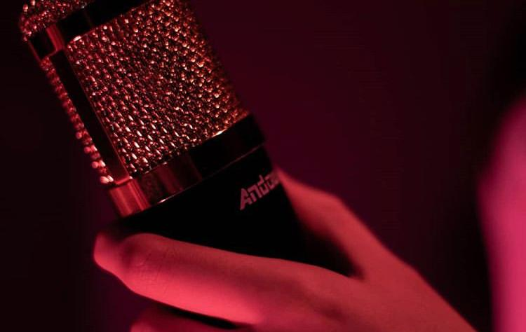

Carou é uma artista que canta com seus sentimentos: AMOR!
Em Dezembro de 2018 tudo começava para Carou, da paixão a luta. Ela buscou fazer acontecer e esta fazendo! Com o lançameno da sua carreira no inicio de 2021 a cantora já tem 5 lançamentos: Endorfina, Uma canção sobre amô, Ser só o hoje, 9 minutos e Não deixa para depois.
Há muito projeto sendo construído e muita carreira pela frente
Album de Fotos
Musicas
Agenda
11/NOV - Gato Negro PubRua Professor Alcebiades Monteiro, n° 1651 - Jardim Meriti, São João de Meriti
26/NOV - Audio Rebel
Rua Visconde Silva, n° 55, Botafogo, Rio de Janeiro
Contato
Produtora: Nó de MarimbaProdutor Artistico: